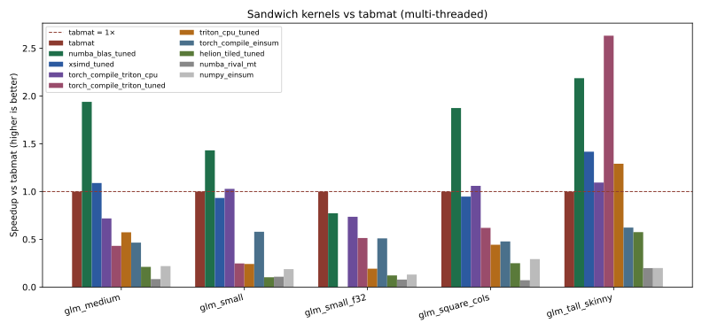
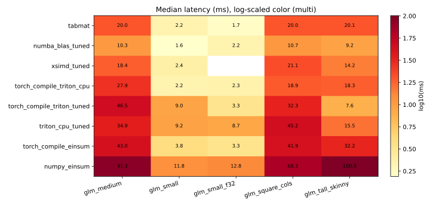
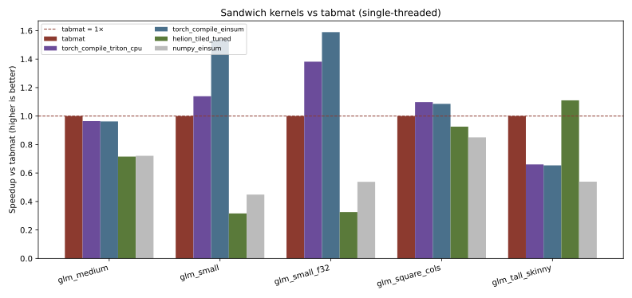
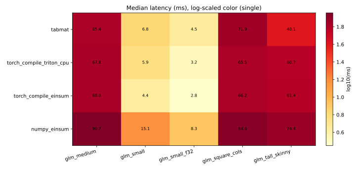

Iteration 05 — Latest consolidated benchmarks
Latest ST/MT results from artifacts/benchmark_results.json (linux-amd64, 4 threads for MT). Plots regenerated by scripts/build_journal_assets.py.
Machine-readable summary: benchmark_summary.json.
Multi-threaded vs tabmat


glm_small (50k×40 f64, 4 threads)
| kernel | median (ms) | vs tabmat |
|---|---|---|
| numba_blas_tuned | 1.55 | 1.43× |
| torch_compile_triton_cpu | 2.16 | 1.03× |
| tabmat | 2.22 | 1.00× |
| xsimd_tuned | 2.38 | 0.93× |
| torch_compile_triton_tuned | 8.98 | 0.25× |
| triton_cpu_tuned | 9.19 | 0.24× |
| numba_rival_mt | 20.54 | 0.11× |
glm_medium (140k×80 f64)
| kernel | median (ms) | vs tabmat |
|---|---|---|
| numba_blas_tuned | 10.33 | 1.94× |
| xsimd_tuned | 18.39 | 1.09× |
| tabmat | 20.03 | 1.00× |
| torch_compile_triton_cpu | 27.88 | 0.72× |
| triton_cpu_tuned | 34.92 | 0.57× |
glm_tall_skinny (320k×32 f64)
| kernel | median (ms) | vs tabmat |
|---|---|---|
| torch_compile_triton_tuned | 7.63 | 2.63× |
| numba_blas_tuned | 9.18 | 2.19× |
| xsimd_tuned | 14.16 | 1.42× |
| triton_cpu_tuned | 15.54 | 1.29× |
| torch_compile_triton_cpu | 18.34 | 1.09× |
| tabmat | 20.07 | 1.00× |
glm_square_cols (80k×120 f64)
| kernel | median (ms) | vs tabmat |
|---|---|---|
| numba_blas_tuned | 10.68 | 1.87× |
| torch_compile_triton_cpu | 18.90 | 1.06× |
| tabmat | 20.02 | 1.00× |
| xsimd_tuned | 21.13 | 0.95× |
Single-threaded vs tabmat


Selected ST winners from the same run: torch_compile_einsum / torch_einsum / torch_compile_tiled_tuned often beat or match tabmat; torch_compile_triton_cpu is competitive (~1.1–1.4× on several shapes). See the heatmaps above for the full picture.
Source map for highlighted kernels
| Kernel | Implementation |
|---|---|
tabmat |
kernels/tabmat_baseline.py |
numba_blas_tuned |
tuned_kernels.py#L87 → _sandwich_kchunk_blas_impl |
xsimd_tuned |
tuned_kernels.py#L145 → xsimd_ext/sandwich_xsimd.cpp |
torch_compile_triton_cpu |
triton_cpu_kernel.py#L326 |
torch_compile_triton_tuned |
tuned_kernels.py#L250 → triton_cpu_kernel.py#L349 |
triton_cpu_tuned |
tuned_kernels.py#L222 → sandwich_triton_cpu_native |
numba_rival_mt |
numba_kernels.py#L266 |
numpy_einsum |
numpy_baseline.py#L25 |
Practical recommendation
- Best ROI:
numba_blas_tuned— beats tabmat on most f64 MT shapes without exotic builds. - Near-tabmat native:
xsimd_tunedwhen the C++ extension is built. - Already on PyTorch:
torch_compile_triton_cpu(einsum) or STtorch_compile_*. - Tall/skinny MT jackpot:
torch_compile_triton_tuned(pay for triton-cpu + autotune). - Avoid for speed: pure fused Numba rivals, JAX CPU, untuned Helion→Triton CPU.